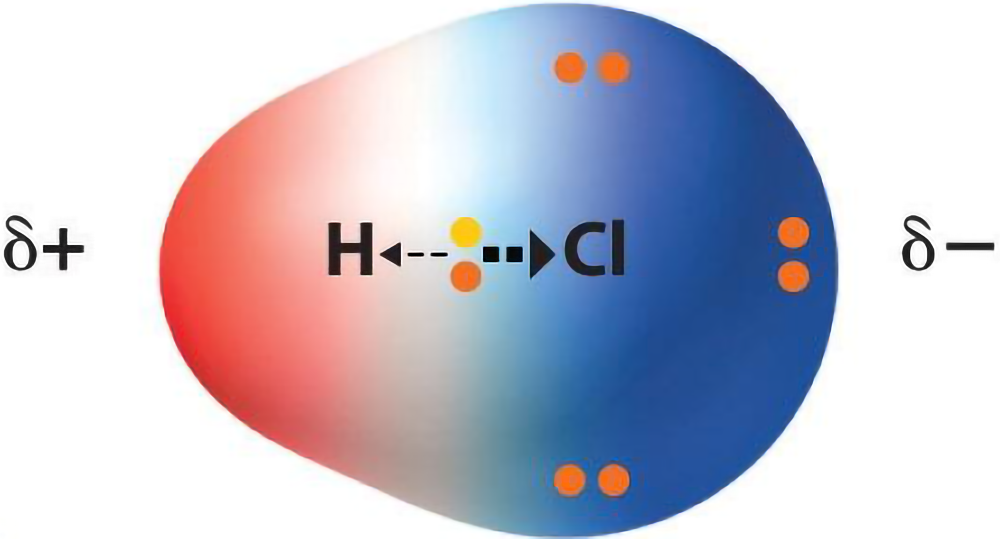

Полярность связей.
Типы ковалентной связи.
Существует два типа ковалентной связи:
Тип связи зависит от распределения общих электронов в образовавшейся молекуле.
Распределение электронов.
В ковалентной неполярной связи общие электроны проводят одинаковое количество времени с каждым из ядер атомов. В ковалентной полярной связи общие электроны находятся ближе к одному ядру большее количество времени, чем к другому.
Электроотрицательность.
Электроотрицательность – это мера способности атома притягивать к себе электроны, участвующие в образовании химической связи. Чем больше электроотрицательность, тем сильнее атом притягивает к себе электроны. Внутри второго и третьего периодов в таблице Менделеева электроотрицательность растет с увеличением номера атома.
Неполярная ковалентная связь.
Неполярная ковалентная связь возникает между атомами с нулевой или похожей разницей(до 0.4) в электроотрицательности. При таком типе связи атомы притягивают электорны примерно с одинаковой силой. Вся поверхность образовавшейся молекулы нейтральна по заряду, у молекулы нет полюсов.
Ковалентная полярная связь.
Ковалентная полярная связь возникает между атомами с разницей в электроотрицательности от 0.4 до 1.7. Атом с большей электроотрицательностью притягивает электроны сильнее, чем атом с меньшей электроотрицательностью. Поверхность молекулы около атома с большей электроотрицательностью получает частичный отрицательный заряд, а около другого атома положительный. У молекулы появляются полюса.

Чем больше разница в электроотрицательности, тем связь более полярная.
{kind=link}
{kind=link}